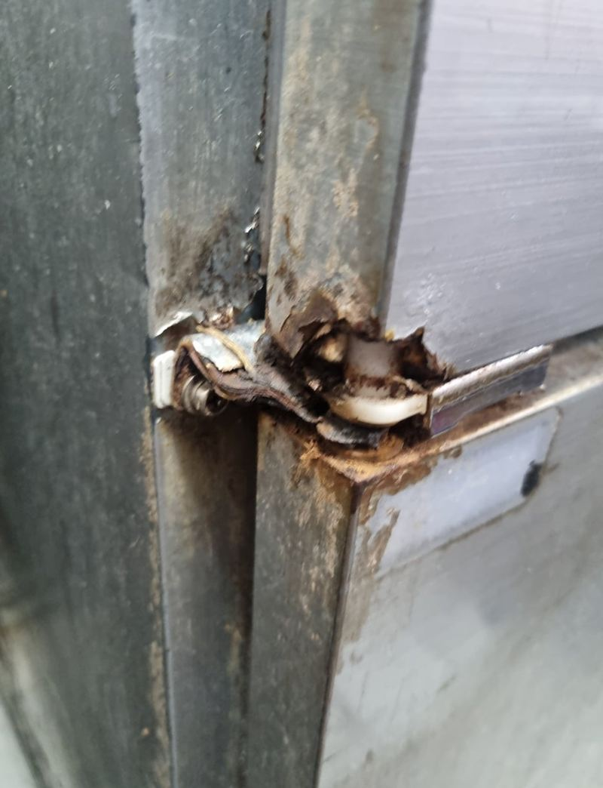
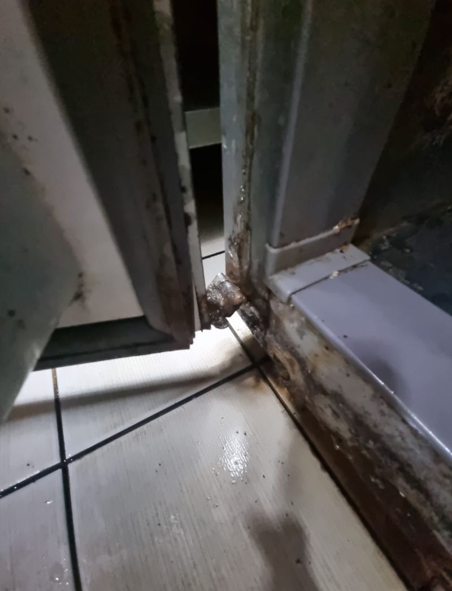
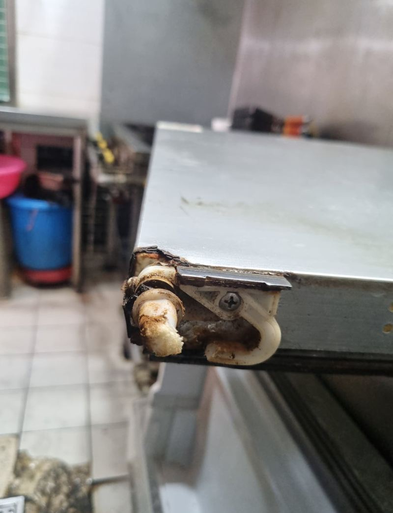
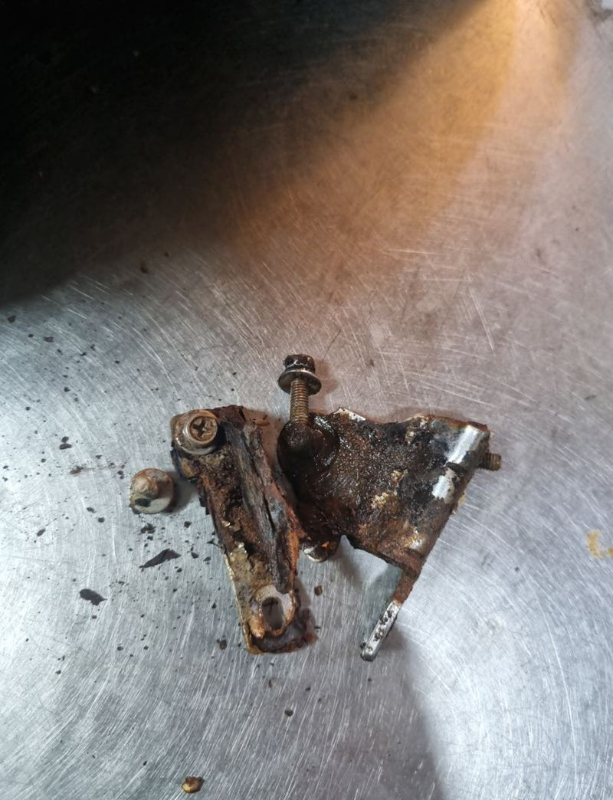
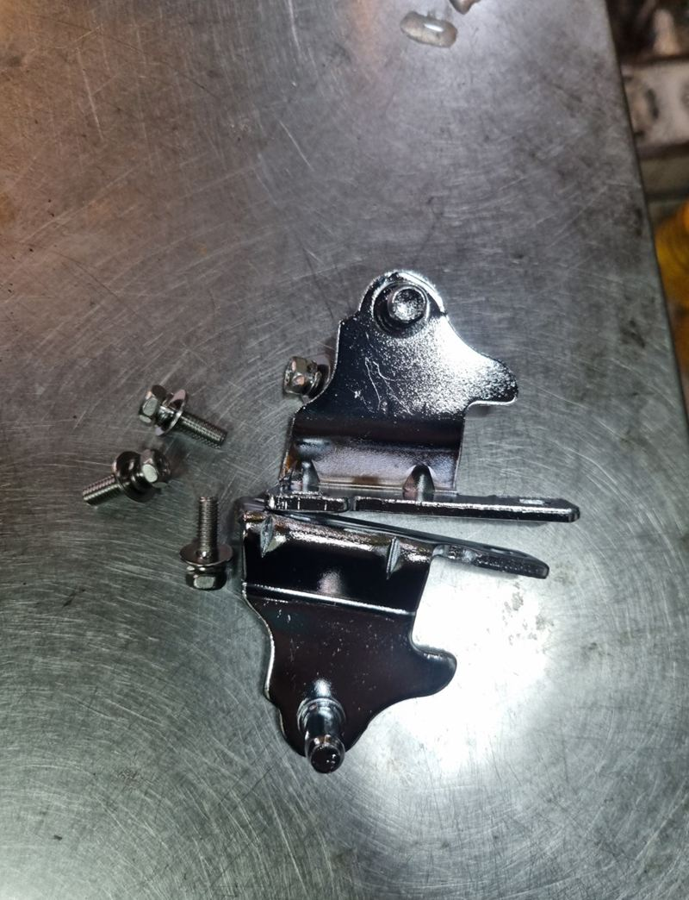
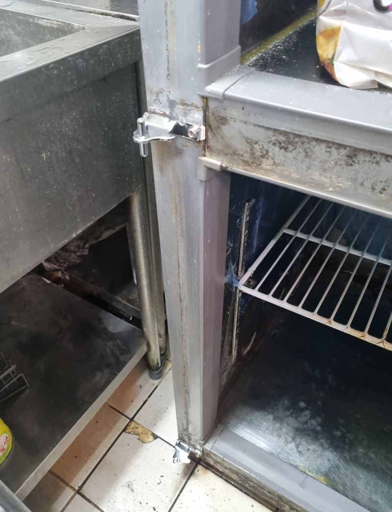

수원 음식점 냉장고 녹슨 힌지 교체 방법
← 밀어서 전후 비교 →
장사하는 주방에서 냉장고 문 하나가 덜렁거리면 하루 종일 신경이 쓰여요. 이 가게도 문이 조금씩 처지다가 결국 한쪽이 빠져 버린 상태였어요. 냉장고를 바꿀 필요 없이 녹슨 하단 힌지만 새것으로 갈아서 다시 단단히 붙였어요.
| 현장 | 수원 음식점 주방, 업소용 냉장고 |
|---|---|
| 증상 | 문이 점점 처지다 한쪽이 빠짐, 하단 힌지 녹 부풀음 |
| 한 일 | 문 분리 → 녹슨 힌지 철거 → 같은 자리 새 힌지 → 수평 조정 |
| 함께 본 것 | 고무 패킹 밀착, 저절로 닫힘 여부 |
문이 떨어진 진짜 이유
문을 받치는 아래쪽 힌지가 녹으로 부풀고 삭아 있었어요. 고정 나사도 녹에 엉겨 붙어 힘을 못 쓰고 있었고요. 문 무게를 지탱하던 부품이 약해지니 문이 기울고, 여닫을 때마다 흔들리다 빠진 거예요.


음식점 냉장고 힌지가 유독 빨리 녹스는 이유
음식점 주방은 바닥 청소와 설거지로 물이 늘 튀어요. 냉장고 하단은 그 물이 가장 많이 닿고 잘 마르지 않는 자리예요. 금속 힌지가 젖었다 마르기를 반복하면 녹이 슬고, 녹이 번지면 고정력이 떨어져요. 바닥 물청소를 자주 하는 가게일수록 1년에 한 번쯤 힌지 상태를 봐 두시는 게 좋아요.
힌지 교체는 이렇게 했어요
-
문 분리와 안쪽 확인
더 망가지지 않게 문을 먼저 떼어 내고, 힌지가 박혀 있던 본체 쪽 상태를 확인했어요.

-
녹슨 힌지 떼어 내기
녹으로 고착된 나사는 억지로 돌리면 머리가 뭉개져요. 주변이 상하지 않게 조금씩 풀어서 힌지를 빼냈어요.


-
새 힌지 장착과 수평 맞춤
원래 자리에 정확히 맞춰 새 힌지를 달고, 문을 다시 걸어 한쪽으로 기울지 않게 수평을 잡았어요. 조금만 틀어져도 문이 덜 닫혀 냉기가 새요.

-
여닫기 확인
문을 여러 번 열고 닫으며 고무 패킹이 고르게 붙는지, 저절로 닫히는지 확인했어요.
이럴 때 업소용 냉장고 문을 손보세요
- 문을 닫아도 살짝 떠 있어요힌지가 처지기 시작한 신호예요. 냉기가 새서 전기도 더 들어요.
- 문 아래 모서리가 바닥에 끌려요하단 힌지가 휘었거나 녹으로 주저앉은 경우가 많아요.
- 문을 들면 위아래로 덜컹거려요고정 나사가 풀렸거나 힌지 구멍이 헐거워졌을 수 있어요.
- 힌지 주변에 붉은 녹물이 보여요겉에서 보일 정도면 속은 더 삭아 있어요. 떨어지기 전에 바꾸는 게 좋아요.
업소용 냉장고 수리 질문
영업 중에도 작업할 수 있나요?
문 하나를 떼는 작업이라 다른 칸은 그대로 쓸 수 있어요. 손님이 적은 시간에 맞춰 드려요.
힌지 부품은 어떻게 구하나요?
기존 힌지 크기와 구멍 간격을 보고 맞는 부품을 준비해요. 냉장고 모델명 라벨 사진을 보내 주시면 빨라요.
냉기가 새는 건 패킹 문제 아닌가요?
패킹이 찢어졌을 수도 있지만, 문이 처져서 틈이 생기는 경우도 많아요. 힌지부터 확인해 보는 게 좋아요.
냉장고 고장(냉각 불량)도 봐 주시나요?
냉각 장치 고장은 냉장고 전문 수리 업체가 정확해요. 저희는 문, 힌지, 손잡이처럼 몸체 쪽을 맡아요.
집 냉장고장 문도 같은 방식인가요?
가정용 냉장고장 문짝 처짐도 경첩 교체로 잡을 수 있어요. 사진을 보내 주세요.
힌지 말고 문 패킹도 같이 바꿀 수 있나요?
패킹이 찢어지거나 딱딱해졌다면 같은 날 함께 바꾸는 게 효율적이에요. 패킹 사진도 같이 보내 주세요.
여러 대 냉장고를 한 번에 봐 주시나요?
같은 가게 안 여러 대의 문 상태를 한 번에 점검하고 손볼 수 있어요.
힌지 교체 후에도 문이 처지면요?
문 자체가 휘었거나 본체 쪽 나사 구멍이 헐거워진 경우예요. 구멍을 보강하거나 문 수평을 다시 잡아 드려요.
냉동고 문도 같은 방식인가요?
업소용 냉동고 문도 구조가 비슷해서 힌지와 손잡이 교체가 가능해요. 모델 라벨 사진을 보내 주세요.
다른 냉장고장 현장
처진 문 전체와 아래 힌지 쪽을 가까이 찍어서 보내 주세요.
전화 상담 010-4517-9872